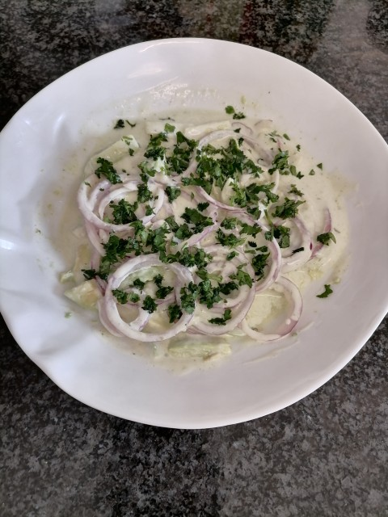

Home
Avocado Salad

🥑 Description
A fresh, creamy salad featuring sliced avocado and thinly sliced red onions, drizzled with a tangy mayo-cream lemon dressing, and garnished with chopped green coriander. Perfect as a side for a light meal.
Ingredients
- 1 avocado, sliced
- 1 small red onion, sliced into thin rings
- 4 tbsp mayonnaise
- 4 tbsp fresh cream
- 1 tbsp lemon juice
- Green chutney (as per taste)
- Salt (to taste)
- Chopped green coriander for garnish
Steps
- Slice the avocado and mix with lemon juice, then layer in a serving dish.
- Thinly slice the red onion into rings and spread evenly over the avocado.
- In a bowl, whisk together the mayonnaise, fresh cream, lemon juice, green chutney, and salt to form the dressing.
- Pour the dressing over the avocado and onion mixture.
- Gently mix everything together and top with chopped coriander. Serve immediately.